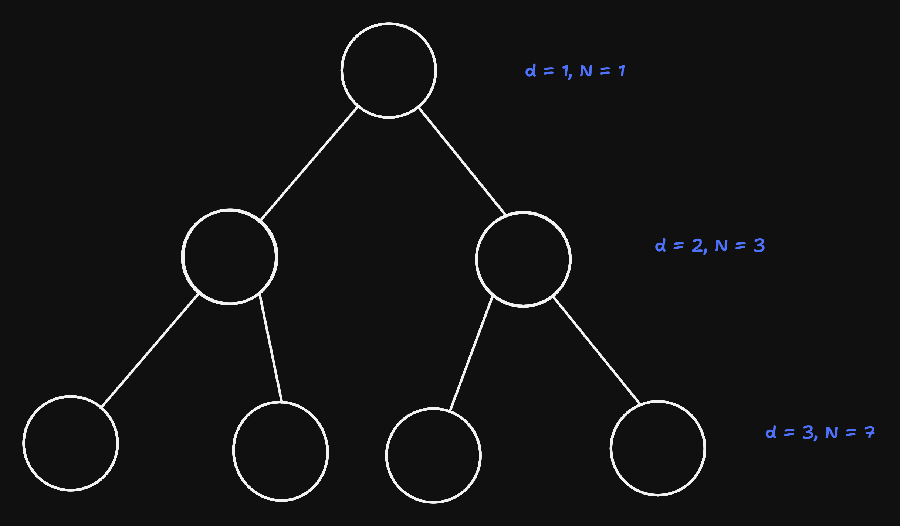
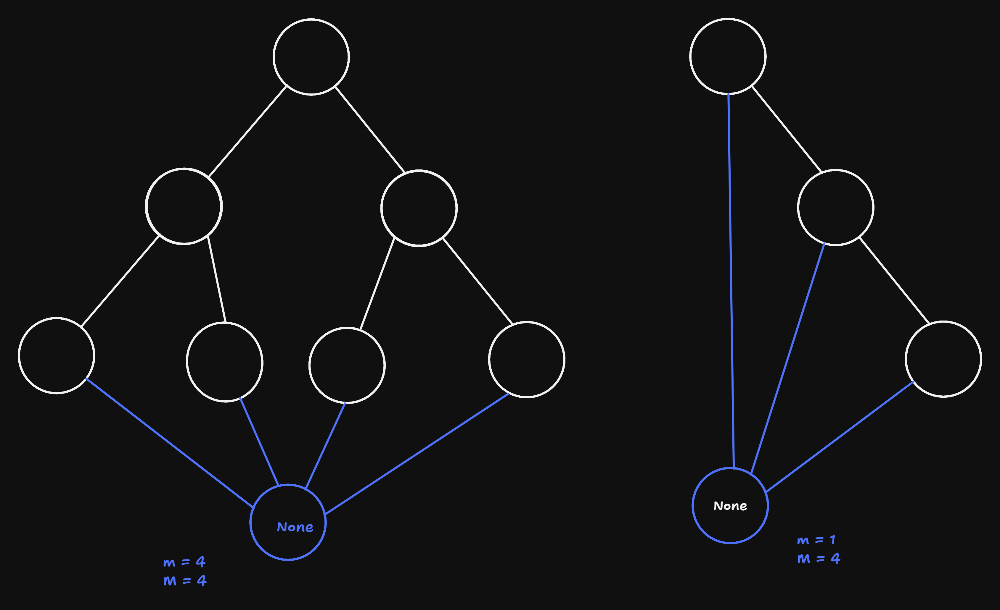
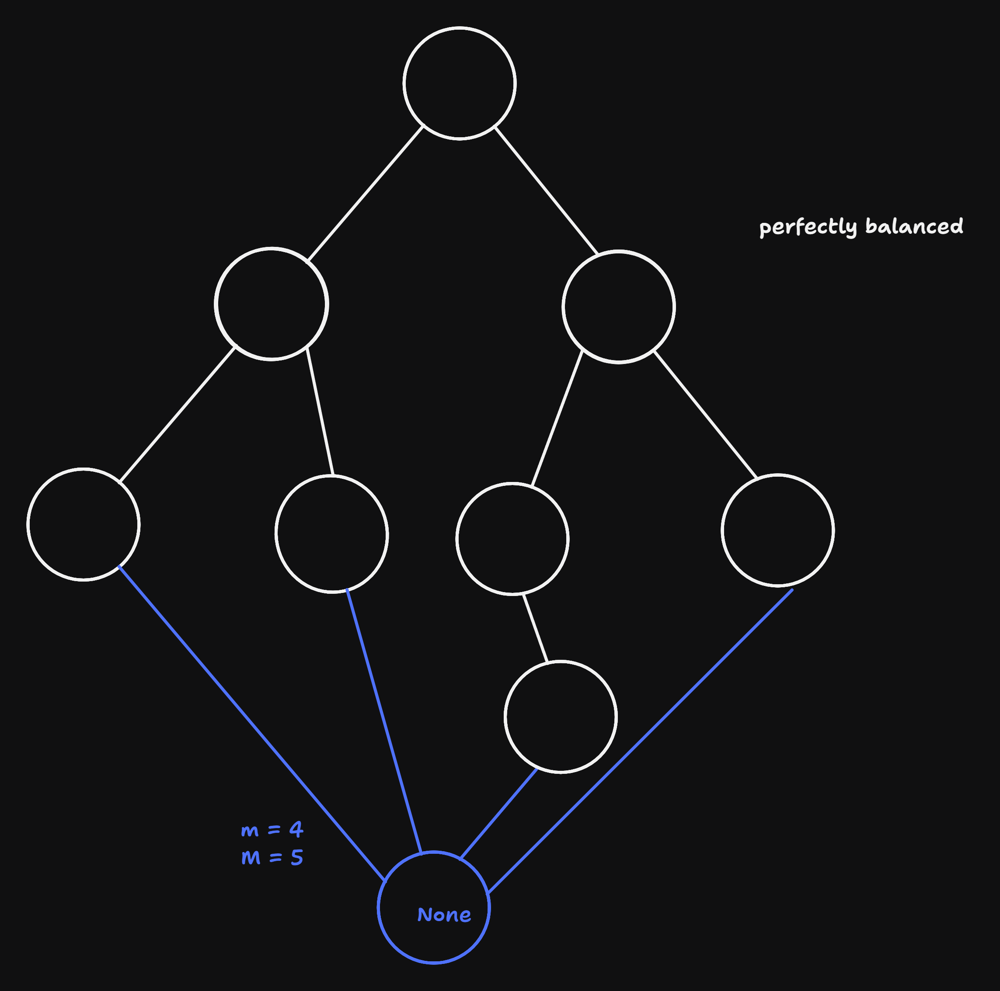
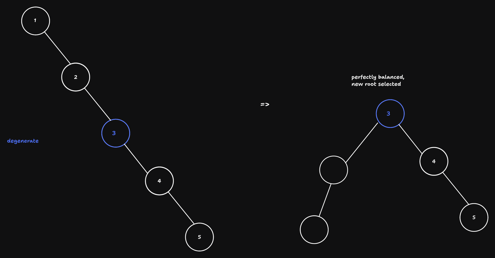
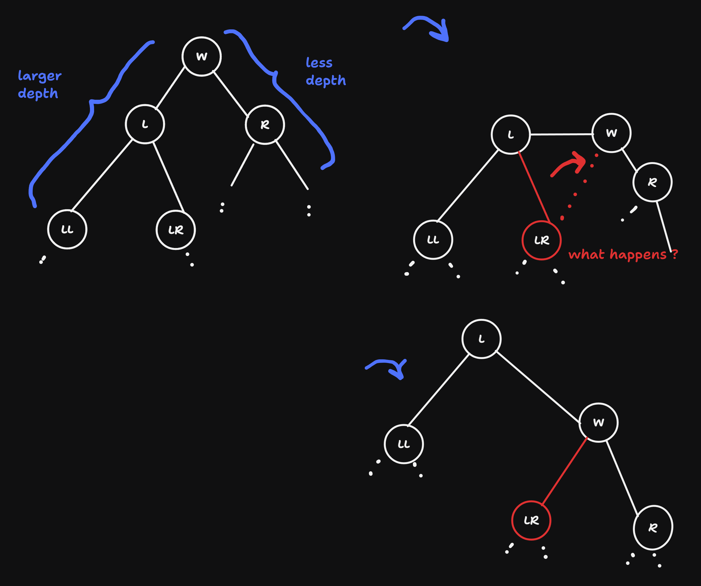
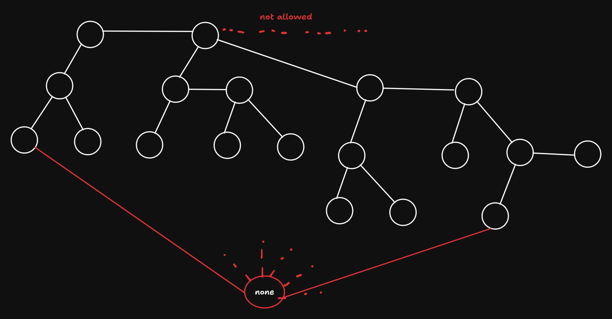
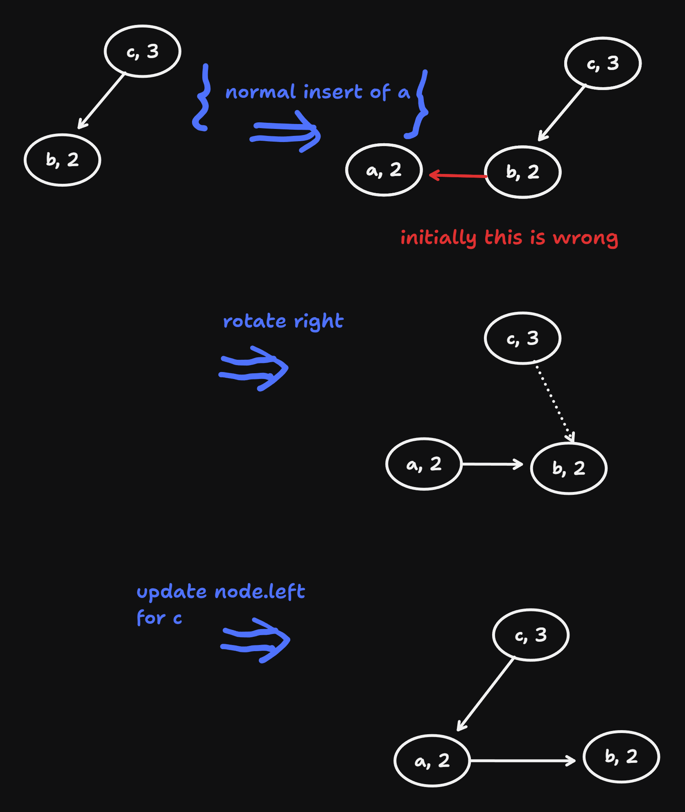
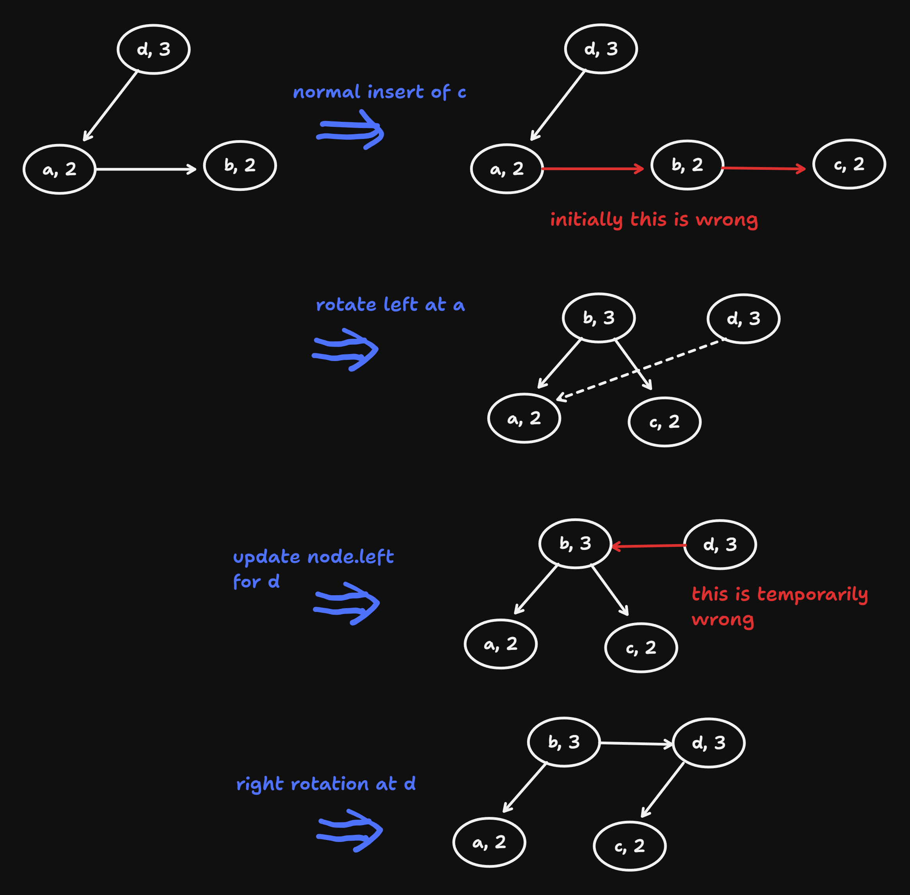

Week 9
VL 17 - 10.06.25
Search Trees (Cont.)
- complexity of the tree-search:
- T(tree) = O(number of comparisons)
- number of comparisons = length of the path from the root to the target, or “not found”
- extreme cases:
- degenerate tree: all nodes have at most one child \(\Rightarrow\) the tree is a linear list \(\Rightarrow\) O(N)
- complete tree:
- first we define depth of a node as the length of the path from the root to the node.
- then a complete tree is defined as a tree s.t.
- every non-leaf node has two children
- all nodes that have the same depth have the same amount of children
- \(\Rightarrow\) \(N = 2^d - 1\), O(d) = O(log(N))

- sentinel:
- obervation: all invalid (empty) children point to None
- idea: insert
Noneas an actual node, a so-called “sentinel” in the graph:

- RS-path (root-sentinel path): any path from root to None (sentinel)
- m := min(|RS|)
- M := max(|RS|)
- given these, the definition of a complete tree can be simplified as a tree s.t. m = M
- perfect balanced tree: M <= m + 1, or nodes with less than two children only in the last or forelast levels

- search in worst case does M - 1 comparisons which is approx log(N).
- In order for the tree-search to be efficient, the balance sof the tree should be preserved during the insert / remove operations
- Oldest idea: AVL-trees - always pefectly balanced, but this is complicated and actually unneccesary.
- We weaken the condition of perfectly balanced and instead only require balanced \(\Rightarrow\) Number of comparisons = M - 1 = k * log(N), where k >= 1 is a constant that is independent from N.
Data Structures for Balanced Trees (Not Necessarily Perfect)
- Red-Black Trees: standard implementation
- Anderson Trees: simplification of Red-Black Trees, later
- Treap: combination with priority search-trees, i.e. Heaps
- Heaps are trees where the the least or largest element are searched.
Fundamental Operation: Rotation
- Goal: a simple re-structuring of the tree s.t.
- search-tree condition is preserved
- balance is improved (M - m is reduced, or at least doesn’t get larger, because sometimes multiple subsequent rotations are necessary)
- Two types of rotation:
- RS-path of the left sub-tree is longer \(\Rightarrow\) right-rotation
- RS-path of the right sub-tree is longer \(\Rightarrow\) left-rotation

naive idea is the simply assign “5” as the new root, but this won’t always work when new node is inserted, but the core idea is stil correct immediately
let’s consider a general situation:

- advantage of rotation: local operation: you only have to ‘know’ the root and its children, not the whole tree
- implementation:
def tree_rotate_right(node):
new_root = node.left
node.left = new_root.right
new_root.right = node
return new_root # inform Roots parent aboaut change
def tree_rotate_left(node):
new_root = node.right
node.right = new_root.left
new_root.left = node
return new_root- we haven’t yet implemented when and where the rotation is performed, only how. Various implementations of Red-black Tree address this in different ways. We will come to this later
Anderson Trees
- differnetiate between horizontal and vertical edges
- only right children can be connected horizontally
- two horizontal edges can follow each other subsequently

- if we include only the vertical edges wenn calculating the length of the RS-paths then min(|RS|) = max(|RS|), which is virtually perfectly balanced
- the “actual” depth is at most twice as much as the “virtual” / “effective” one, since at most every 2nd edge horizontal the factor 2 is absorbed in O().
VL 18 - 12.05.25
- revision of: complete tree, perfectly balanced tree, balanced tree.
Self Balancing Trees
principle:
- In ‘forward’ (form root towards the leaves) recursive run insert the elements the usual way, i.e. same as with unbalanced trees
- On the way back we repair the balance.
Anderson Trees solve this problem especially simply and elegantly:
each node stores additional information about the balance: the max distance to
None= length of the max RS-pathimplementation
class AndersonNode: def __init__(self, key, value): self.key = key self.value = value self.left = self.right = None self.dist = 2
Bedingungen fuer gueltigen Anderson-Baum
- Search-tree Condition
- There are vertical edges (distance of a node = distance of the child + 1)
There are horizontal edges (distance of a node = distance of a child) - Only right children are allowed to be horizontal (if
node.left != Nonethen `dist = node.left.dist + 1) - subsequnet edges are never allowed to be horizontal:
ifnode.right != Noneandnode.right.right != Nonethennode.dist >= node.right.right.dist + 1
\(\Rightarrow\) repair balance s.t. 0) is always satisfied by using rotations, 1-3 will then hold again
Implementation:
def anderson_insert(node, key, value):
if node is None: return AndersonNode(key, value)
if key == node.key:
node.value = value
return node
if key < node.key:
node.left = anderson_insert(node.left, key, value)
else:
node.right = anderson_insert_node.right, key, value)
# balance condition can possibly be violated
if node.left is not None and nodeist == node.left.dist: # horizontal after left is not allowed
# transform into horizontal right
note = tree_rotate_right(node)
if node.right is not None and node.right.right is not None and node.ist == node.right.right.dist:
# two subsequent right horizontal => right rotation and lift up
node = tree_rotate_left(node)
node.dist += 1
return nodeExamples: To differentiate from the dist, keys are letters.

anderson insert a 
anderson insert c
Complexity of anderson_insert()
- all instructions other than the recursion are O(1) if the tree is balanced, then the right and left recursion is equally expensive on average
- the depth of an anderson tree (also of every sub-tree) is at most twice as much as an equally large perfectly balanced tree
- without proof: if all horizontally connected nodes are united into one, this results in a perfectly balanced tree